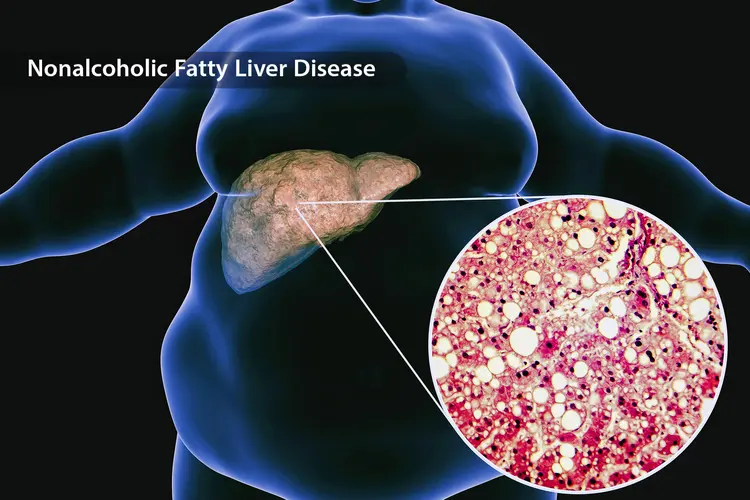

¿Qué son los antifúngicos orales?
Son medicamentos que se toman por vía oral para tratar infecciones por hongos, sobre todo cuando afectan las uñas, varias zonas de la piel o no responden a los tratamientos tópicos.
Pueden ser efectivos, pero algunos pueden causar hepatotoxicidad: daño al hígado inducido por medicamentos. Por eso deben ser indicados y vigilados por un profesional de la salud.

Qué hace el cuerpo con un medicamento
El hígado
Transforma los medicamentos y ayuda a eliminar sustancias potencialmente tóxicas de la sangre.
Los riñones
Eliminan por la orina muchos medicamentos o los productos que resultan de su transformación. Si funcionan mal, el fármaco puede permanecer más tiempo en el cuerpo.
Reacciones impredecibles
No todo daño hepático ocurre por acumulación. Algunas reacciones son raras y posibles incluso con dosis normales, tratamiento corto y pruebas iniciales normales.

Hígado graso y obesidad
La obesidad no significa automáticamente que una persona desarrollará toxicidad por antifúngicos. Pero se asocia con mayor probabilidad de hígado graso, diabetes, resistencia a la insulina, triglicéridos altos, colesterol alterado e hipertensión.
Cuando el hígado graso progresa a inflamación, fibrosis o cirrosis, puede tener menor capacidad para procesar medicamentos y mayor vulnerabilidad a la lesión hepática.
Además, algunos antifúngicos liposolubles, como la terbinafina, pueden distribuirse parcialmente en el tejido adiposo. Esto puede modificar el tiempo que permanecen en el organismo, aunque el exceso de grasa corporal no predice por sí solo toxicidad.
Enfermedad renal
La enfermedad renal puede hacer que los medicamentos eliminados por la orina se acumulen en el cuerpo. Esto es particularmente importante con el fluconazol, ya que aproximadamente el 80 % se elimina por la orina sin cambios. En tratamientos repetidos, una función renal reducida puede requerir ajuste de la dosis.
La terbinafina también requiere atención: se metaboliza en el hígado, pero gran parte de sus metabolitos se elimina por los riñones. En personas con cirrosis o con depuración de creatinina de 50 mL/min o menos, su eliminación puede disminuir aproximadamente un 50 %.
Antifúngicos orales y hongos en las uñas
Terbinafina
Suele ser una de las opciones principales para infecciones por dermatofitos. Puede afectar el hígado, por lo que no se recomienda en enfermedad hepática activa o crónica.
Itraconazol
Alternativa según el tipo de hongo y de la persona. Puede producir toxicidad hepática e interactuar con muchos medicamentos.
Fluconazol
Puede utilizarse en algunos casos. Depende principalmente de los riñones para su eliminación, por lo que puede requerir ajuste si hay insuficiencia renal.
Griseofulvina
No suele ser buena opción para las uñas: es menos eficaz y puede requerir tratamientos prolongados. También puede afectar el hígado.
Ketoconazol
No debe utilizarse para hongos comunes de las uñas por su riesgo importante de daño hepático.
Voriconazol y posaconazol
No se usan habitualmente en hongos comunes de las uñas; se reservan para infecciones fúngicas complejas y requieren seguimiento especializado.
Otros factores de riesgo
El riesgo de hepatotoxicidad puede ser mayor si existe:
- Hígado graso, hepatitis, fibrosis, cirrosis o lesión hepática previa causada por medicamentos.
- Obesidad con diabetes, resistencia a la insulina, síndrome metabólico, colesterol alto o triglicéridos altos.
- Enfermedad renal o diálisis.
- Consumo frecuente o elevado de alcohol.
- Uso simultáneo de varios medicamentos, vitaminas, suplementos, productos naturales o sustancias recreativas.
- Antecedente reciente de dengue u otra infección que haya afectado el hígado.
- Hemocromatosis (acumulación de hierro) o enfermedad de Wilson (acumulación de cobre).
- Porfiria, según el tipo y el medicamento seleccionado.
- Trastornos genéticos o metabólicos que afecten las enzimas del hígado.
Dieta e interacciones
Dieta alta en grasa
Una dieta alta en grasa o cetogénica no causa automáticamente hepatotoxicidad, pero las comidas grasas pueden aumentar la absorción de algunos antifúngicos. Sigue la indicación de tomarlo con comida o en ayunas.
Interacciones
El fluconazol, el itraconazol y el voriconazol afectan enzimas del hígado y pueden elevar o reducir los niveles de otros fármacos en sangre.
Informa todo
Cuéntale al profesional todos tus medicamentos, los de venta libre, suplementos, productos herbales, alcohol y otras sustancias.
Pruebas antes y durante el tratamiento
Las pruebas hepáticas ayudan a detectar daño previo o cambios durante el tratamiento. Para la terbinafina oral se recomienda evaluar si existe enfermedad hepática y realizar pruebas de transaminasas antes de comenzar. Está contraindicada en enfermedad hepática activa o crónica.
Las pruebas son importantes, pero no pueden detectar ni prevenir todos los casos, ya que algunas reacciones son imprevisibles. La necesidad de repetir los estudios debe individualizarse según el medicamento, la duración, las condiciones de salud y las interacciones.
Posibles consecuencias
La hepatotoxicidad puede causar elevación de las enzimas del hígado, inflamación hepática, colestasis (dificultad para eliminar la bilis) o una lesión combinada. En los casos graves puede llevar a:
- Ictericia: piel y ojos amarillos.
- Coagulopatía: sangrado fácil o moretones.
- Encefalopatía hepática: confusión, somnolencia o cambios de conducta.
- Insuficiencia hepática aguda, falla de otros órganos y muerte.
- Necesidad de trasplante de hígado.
Señales de alarma
Suspende el medicamento y busca evaluación médica urgente si aparece alguna de estas señales.
- Piel u ojos amarillos.
- Orina oscura.
- Heces claras o blanquecinas.
- Náuseas, vómitos o pérdida marcada de apetito.
- Fatiga intensa o debilidad inusual.
- Picazón fuerte sin explicación.
- Dolor en la parte superior derecha del abdomen.
- Confusión o somnolencia marcada.
- Sangrado inusual o aparición fácil de moretones.
Lo más importante
Los antifúngicos orales pueden ser apropiados y eficaces para los hongos de las uñas, especialmente la terbinafina, el itraconazol y, en algunos casos, el fluconazol. Pero deben elegirse y vigilarse con mayor cuidado si existen obesidad, hígado graso, enfermedad hepática, enfermedad renal, diabetes, consumo de alcohol o varios medicamentos simultáneos.
No todas las personas necesitan antifúngicos orales: en infecciones leves, limitadas o superficiales, un tratamiento tópico puede ser una opción. La decisión debe tomarla un profesional según el tipo de hongo, el número de uñas afectadas, la severidad, los resultados de laboratorio y las condiciones de salud de la persona.
Fuentes consultadas
- PMC10728840 – Antifúngicos orales y hepatotoxicidad
- PMC5500243 – Obesidad, hígado graso y riesgo metabólico
- PMC5696449 – Alimentos y absorción de medicamentos
- PMC4212151 – Patrones y consecuencias de la lesión hepática
- PMC10952058 – Señales de alarma de lesión hepática
- FDA – Etiqueta de terbinafina
- FDA – Etiqueta de fluconazol
- FDA – Comunicado de seguridad sobre ketoconazol oral
- Brieflands – Reacciones hepáticas idiosincráticas
Conoce todo lo que tratamos en nuestra página de podología o lee más en el Blog de BeautyPod. Para entender qué es y cómo se contagia la infección, lee Onicomicosis y hongos en la piel.